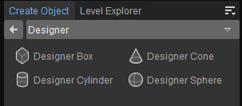

Обзор
Параметр «Дизайнер» в инструменте «Создать объект» используется для добавления простых геометрических фигур на уровень. Фигуры затем можно редактировать с помощью Designer Tool, который находится в меню «Инструменты». Доступны следующие варианты:
- Дизайнерская коробка
- Дизайнерский конус
- Дизайнерский цилиндр
- Дизайнерская сфера

Чтобы изменить объект, нажмите кнопку Редактировать Кнопка под панелью свойств дизайнера. Для получения дополнительной информации см. Вкладка Designer Tool.
Свойства
Чтобы получить доступ к свойствам дизайнера, обязательно выберите объекты дизайнера на вкладке «Создать объект» и перетащите их на уровень.
Недвижимость | Описание |
|---|---|
Отбрасывать тени | Когда эта опция установлена, объект будет отбрасывать тени на другую геометрию/рельеф и т.д. |
Глобальное освещение | Включает/выключает вокселизацию для GI (это влияет на непрямое затенение объекта). |
Поддержка вторая VisArea | Обычно считается, что объекты находятся только в одном VisArea. |
Открытый | Если этот параметр включен, сущность игнорирует использование VisAreas на уровне. Несколько областей видимости можно объединить, чтобы определить точки, из которых они будут видимыми/невидимыми. Для получения дополнительной информации см. Район Вис страница. |
Окклюдер дождя | Установите кисть на закрытие дождя, это работает в сочетании с Rain Entity. |
Соотношение расстояний просмотра | Определяет, насколько далеко от текущего положения камеры можно увидеть объект. |
Исключить из навигации | Если эта опция установлена, объект не будет рассматриваться как часть системы триангуляции AI. Это гарантирует что геометрия объекта не будет способствовать генерации NavMesh и не будет создавать никаких NavMesh поверх объекта или каких-либо отверстий в NavMesh, где размещается объект. |
AI Скрываемый | Если эта опция установлена, AI будет использовать этот объект в качестве укрытия (используя указанный тип точки укрытия). |
Нет динамической воды | Избегает логического слияния в любом окружении static, которое пересекается с первым судном. |
Никаких статических наклеек | Если этот параметр установлен, декали не будут проецироваться на объект. |
Окклюдер | Используется для построения сетки окклюзии уровня. |
| Игнорировать смесь слоев ландшафта | Управляет смешиванием со слоями ландшафта. Для получения дополнительной информации, пожалуйста, обратитесь к Слой ландшафта, смешивающийся с объектами страница. |
| Игнорировать смесь декалей | Управляет смешиванием с декалями. Дополнительную информацию о наклейках см. наклейка страница. |
Редактировать | Позволяет открыть Designer Tool для редактирования объекта Designer. |